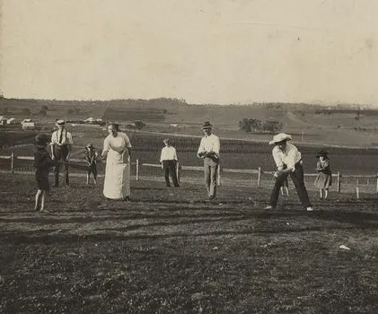
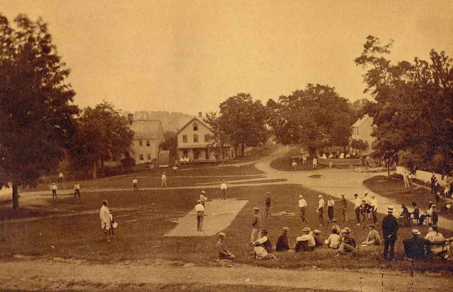
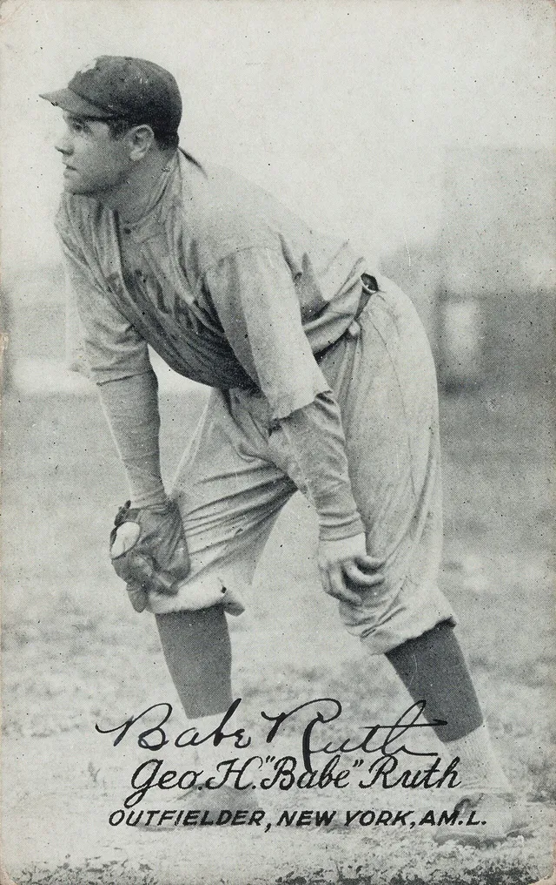
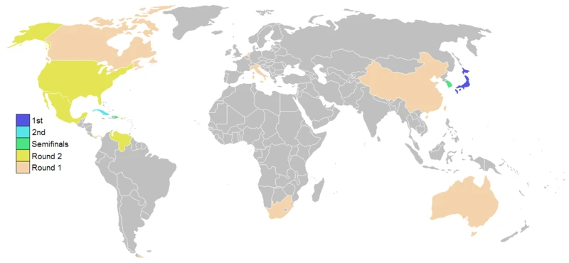

Historia
Antecedentes
El beisbol viene de juegos ingleses de bate y pelota como el rounders y el stoolball. La palabra "base-ball" apareció impresa por primera vez en 1744, en un libro infantil publicado en Londres, y en 1796 un libro alemán ya explicaba sus reglas.

Nace la versión moderna
En Estados Unidos hay registros desde 1778, cuando un soldado de la guerra de independencia anotó en su diario que había jugado "a la base". En 1845 el Knickerbocker Base Ball Club de Nueva York, con Alexander Cartwright entre sus miembros, escribió las primeras reglas modernas, y el 19 de junio de 1846 se jugó en Hoboken, Nueva Jersey, el primer partido registrado con ellas.
Durante años se dijo que Abner Doubleday lo inventó en 1839, pero los historiadores ya demostraron que es un mito.

Deporte profesional
En 1869 los Cincinnati Red Stockings fueron el primer equipo en pagarle a todos sus jugadores. En 1876 nació la Liga Nacional, la liga profesional más antigua que sigue activa, y en 1901 la Liga Americana. En 1903 los campeones de las dos se enfrentaron en la primera Serie Mundial, que ganó Boston. Juntas forman hoy las Grandes Ligas (MLB).
Leyendas
Babe Ruth convirtió el jonrón en espectáculo: en 1927 bateó 60 y se retiró con 714. Mientras tanto, a los peloteros afroamericanos no se les dejaba jugar en las Grandes Ligas, así que en 1920 Rube Foster fundó la Liga Nacional Negra, donde brillaron Satchel Paige y Josh Gibson. Desde 2024, MLB cuenta sus estadísticas como oficiales.

El 15 de abril de 1947 Jackie Robinson debutó con los Dodgers de Brooklyn y rompió la barrera racial; desde 1997 su número 42 está retirado en todos los equipos. Después llegaron leyendas como el puertorriqueño Roberto Clemente, primer latinoamericano en el Salón de la Fama (1973), y Hank Aaron, que en 1974 superó el récord de jonrones de Ruth.
El juego de hoy
El beisbol ha cambiado con su tiempo: llegaron los juegos de noche (1935), las transmisiones por televisión (1939), el bateador designado y, en 2023, el reloj de lanzamientos, que hizo los partidos más de 20 minutos más cortos. La gran figura actual es el japonés Shohei Ohtani, que batea y lanza al más alto nivel: en 2024 fue el primero en lograr 50 jonrones y 50 bases robadas en una misma temporada.
Globalización
El juego viajó con marineros, estudiantes y trabajadores. Japón lo conoció en 1872 gracias al profesor estadounidense Horace Wilson, y hoy su liga, la NPB, es de las más fuertes del mundo; en Cuba se jugó el primer partido formal en 1874, en Matanzas. También hay ligas profesionales en Corea del Sur, Taiwán, República Dominicana, Venezuela, Puerto Rico, México, Australia y varios países de Europa.
En 2026, uno de cada cuatro jugadores de Grandes Ligas nació fuera de Estados Unidos, sobre todo en República Dominicana (93) y Venezuela (60).
Olímpicos y Clásico Mundial
El beisbol fue deporte olímpico de Barcelona 1992 a Pekín 2008 (Cuba ganó tres de esos cinco oros), volvió en Tokio 2020, donde ganó Japón, y regresará en Los Ángeles 2028.
Desde 2006 se juega el Clásico Mundial de Beisbol, el torneo de selecciones más importante. Japón lo ha ganado tres veces (2006, 2009 y 2023), República Dominicana en 2013 y Estados Unidos en 2017. El más reciente, en marzo de 2026, fue para Venezuela, que se coronó por primera vez al vencer 3-2 a Estados Unidos en Miami.

Momentos clave
- 1744Primera mención impresa de "base-ball", en Londres.
- 1845Reglas del Knickerbocker Base Ball Club.
- 1869Primer equipo profesional: los Cincinnati Red Stockings.
- 1903Primera Serie Mundial.
- 1947Jackie Robinson rompe la barrera racial.
- 1992El beisbol se vuelve deporte olímpico oficial.
- 2006Primer Clásico Mundial de Beisbol.
- 2026Venezuela gana su primer Clásico Mundial.
Beisbol en México
El beisbol llegó a México en el siglo XIX con marineros y trabajadores del ferrocarril, y ciudades como Guaymas, Nuevo Laredo y Cadereyta se disputan el primer juego. En 1887 se fundó el Club México, el primer equipo de la capital, y en 1925 Alejandro Aguilar Reyes "Fray Nano" y Ernesto Carmona crearon la Liga Mexicana de Beisbol, que en 2025 cumplió 100 años. En los años cuarenta, el empresario Jorge Pasquel trajo al país a estrellas de las Ligas Negras y de Grandes Ligas; en 1981 el sonorense Fernando Valenzuela desató la "Fernandomanía" con los Dodgers, y en el Clásico Mundial de 2023 México llegó por primera vez a semifinales.